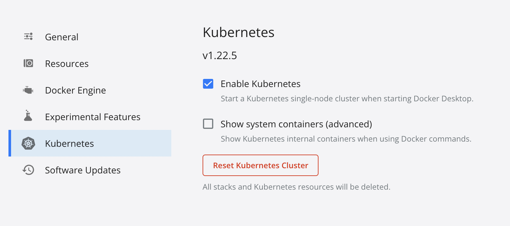

It might be necessary to apply some mitigation using external tools to give Dev teams more time to fix critical vulnerabilities, especially for large codebases. Employing Web Application Firewall could be such a temporary solution.
The article covers setting up a test Kubernetes environment with NGINX Ingress controller and ModSecurity WAF to block Spring RCE (CVE-2022-22965), known as Spring4Shell.

Kubernetes on macOS
One of the ways to get Kubernetes on a macOS machine is to enable it in the Docker desktop app.

If Kubernetes is up, the command kubectl get nodes should show a single node called docker-desktop.
Nginx ingress controller
We can install Nginx ingress controller using helm or create Kubernetes resources using kubectl:
helm upgrade --install ingress-nginx ingress-nginx \
--repo https://kubernetes.github.io/ingress-nginx \
--namespace ingress-nginx --create-namespaceor
kubectl apply -f https://raw.githubusercontent.com/kubernetes/ingress-nginx/controller-v1.1.2/deploy/static/provider/cloud/deploy.yaml
We have to wait until the ingress pod gets ready before proceeding:
kubectl wait \
--namespace ingress-nginx \
--for=condition=ready pod \
--selector=app.kubernetes.io/component=controller \
--timeout=120sTest application
We are going to create a simple web server and an ingress resource.
kubectl create deployment modsecurity-demo --image=httpd --port=80
kubectl expose deployment modsecurity-demo
kubectl create ingress demo-localhost --class=nginx \
--rule='modsecurity/*=modsecurity-demo:80'To access our k8s application, we need to add the following record to the /etc/hosts file:
127.0.0.1 modsecurity
We need to keep the tunnel to ingress pod up for all the subsequent actions:
kubectl port-forward --namespace=ingress-nginx service/ingress-nginx-controller 8080:80
Let’s test our environment:
curl http://modsecurity:8080/
We should get <html><body><h1>It works!</h1></body></html>
ModSecurity Nginx module
To enable ModSecurity, we need to edit the ingress ConfigMap:
kubectl edit configmaps --namespace ingress-nginx ingress-nginx-controller
and put the following excerpt in the data key:
data:
allow-snippet-annotations: "true"
enable-modsecurity: "true"
enable-owasp-modsecurity-crs: "true"We could check if the configuration is ok by the command:
kubectl logs -f --namespace ingress-nginx \
--selector=app.kubernetes.io/component=controllerThe following logs are a good sign:
I0401 13:36:43.188153 8 controller.go:159] "Configuration changes detected, backend reload required"
I0401 13:36:43.457233 8 controller.go:176] "Backend successfully reloaded"Now, we have enabled ModSecurity and The OWASP ModSecurity Core Rule Set.
For more complex solutions, examine the following files:
- /etc/nginx/modsecurity/modsecurity.conf;
- /etc/nginx/owasp-modsecurity-crs/nginx-modsecurity.conf;
By default, ModSecurity works in the detection mode.
To block attacks, we override the config using the modsecurity-snippet key:
data:
allow-snippet-annotations: "true"
enable-modsecurity: "true"
enable-owasp-modsecurity-crs: "true"
modsecurity-snippet: |-
SecRuleEngine On
SecRequestBodyAccess OnThe command curl 'http://modsecurity:8080/?param="><script>alert(1);</script>' should return
<html>
<head><title>403 Forbidden</title></head>
<body>
<center><h1>403 Forbidden</h1></center>
<hr><center>nginx</center>
</body>
</html>Spring4Shell exploit (CVE-2022-22965)
We may represent the Spring4Shell exploit using the following request:
curl 'http://modsecurity:8080/?class.module.classLoader.resources.context.parent.pipeline.first.pattern=%25%7Bprefix%7Di%20java.io.InputStream%20in%20%3D%20%25%7Bc%7Di.getRuntime().exec(request.getParameter(%22cmd%22)).getInputStream()%3B%20int%20a%20%3D%20-1%3B%20byte%5B%5D%20b%20%3D%20new%20byte%5B2048%5D%3B%20while((a%3Din.read(b))!%3D-1)%7B%20out.println(new%20String(b))%3B%20%7D%20%25%7Bsuffix%7Di'
That request will be blocked by rule 944130 of OWASP ModSecurity Core Rule Set as it contains certain Java classes listed here.
What if an attacker could use other classes?
The common thing among these types of attacks is the usage of Java Classloader (an object that is responsible for loading classes).
Let’s see how we can catch it.
ModSecurity rules
ModSecurity rules have the following syntax:
SecRule VARIABLES OPERATOR [ACTIONS]
Variables represent parts of the request. In this demo, we will employ ARGS and ARGS_NAMES variables.
ARGScontains all arguments, including the POST payloadARGS_NAMEScontains all request parameter names.
The operator is an expression specifying how and what to search in arguments. If the operator name is omitted, the string is interpreted as a regular expression.
We might use something like \.classLoader\. for our purpose.
We want to block matched requests and add some meaningful descriptions to logs. We use the following action string for that:
log,deny,phase:2,id:76000001,severity:CRITICAL,msg:\'Possible Spring4Shell exploitation\'
Let’s put it all together in the ingress-nginx-controller ConfigMap as
data:
allow-snippet-annotations: "true"
enable-modsecurity: "true"
enable-owasp-modsecurity-crs: "true"
modsecurity-snippet: |-
SecRuleEngine On
SecRequestBodyAccess On
SecRule ARGS|ARGS_NAMES "\.classLoader\." "log,\
deny,\
phase:2,\
id:76000001,\
severity:CRITICAL,\
msg:\'Possible Spring4Shell exploitation\'"Now, if we request
curl 'http://modsecurity:8080/?class.module.classLoader.resources.context.parent.pipeline.first.pattern=pupalupa'
or
curl -X POST http://modsecurity:8080/ -d 'class.module.classLoader.resources.context.parent.pipeline.first.pattern=pupalupa'
we will get the 403 Forbidden error.
Do we need to think about URL encoding bypasses and use some input preprocessing? No, ModSecurity automatically decodes URL on request parameters.
But if you are deliberate in performing URL decoding twice, use the urlDecode function.
That is an oversimplified example to get a glimpse of the usage of ModSecurity WAF in Kubernetes. I highly recommend the ModSecurity documentation.